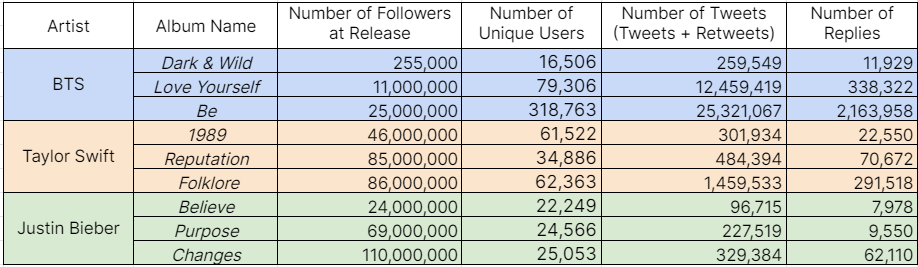
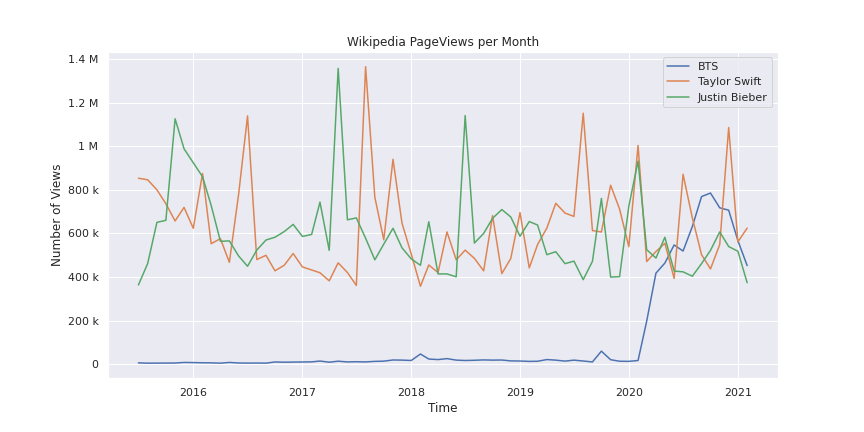

Google Trends
Google Trends analyzes the popularity of search queries inputted into Google’s search
engine over a given period of time for various locations and languages. The data is an
unbiased sample of Google search data that is anonymized, categorized, normalized, and
aggregated to the time and location of a query. Search data can be filtered by category,
such as “Arts and Entertainment” and “News”.
Google Trends then computes and outputs a scaled popularity score on a range of 0 to 100,
with 100 being the maximum possible search interest, by comparing the volume of the term’s
searches to the overall volume of site searches for the set period and geography.
Monthly Google Trends Arts and Entertainment search interest since 2004:
Monthly Google Trends General search interest since 2004:
When plotting both our Arts and Entertainment and general search, we see
that BTS has had a steadier increase in interest compared to Swift or Bieber,
who became “overnight sensations” and had a large spike in interest during their
early career. On our Arts and Entertainment graph, it appears that Taylor Swift and
Justin Bieber are on a downtrend in popularity, with interest spikes during album
releases, after peaking in the early-mid 2000/2010s, with BTS overtaking Bieber in
popularity around August 2018. Currently, all three artists have approximately the
same level of Arts and Entertainment interest, with Swift having a slight lead
over BTS and Bieber at the bottom of the three.
Our general search plot shows a lower general interest rate for Taylor Swift and an
increased interest in Justin Bieber and BTS. However, this plot shows a sharper
decline in popularity for Bieber and higher increase for BTS in comparison to the
Arts and Entertainment trends. Despite
Swift and Bieber’s established popularity, newcomer BTS has been able to unseat both of
these popular Western artists in general search interest before the release of their
second album.
Twitter
To obtain our Twitter data, we used the Python API twint to scrape tweets without the
limitations of the official API, which only allows for scraping up to seven days before
the usage date. We determined “relevant” tweets during the aforementioned time periods
by scraping Twitter for two hashtags per album: the most popular artist hashtag and the
most popular album hashtag. For example, for BTS’s first album Dark & Wild, we scraped all
tweets that contained the “query” hashtags #BTS and #DarkAndWild during the time period.
Using twint, we scraped all the original tweets during the specific album release timeframes.
Summary Statistics for Twitter album data

By sheer numbers, BTS Twitter fans appear to carry more weight per individual which more than
compensates for their lower overall size throughout the three albums. By the third album,
there are about 1.1 total tweets (including replies) per follower for BTS in that time period,
while Taylor Swift and Justin Bieber average 0.020 and 0.0035 tweets per follower. Though BTS
has a relatively smaller fanbase size as defined by the number of followers, its members are
far and beyond more actively engaging on Twitter.
However, sheer numbers alone do not conclusively indicate collaboration. It is possible that
the original tweets in our dataset could largely be independent individuals tweeting about
their favorite artists/albums. As a specialty of fandom Twitter—not counting artist and public
relations (PR) tweet contributions—there are two main subsets of users: content generators and
amplifiers.

Naturally, content generators make up a very small portion of total Twitter users, but account
for the majority of engagement. With the amount of engagement the content they push out receives,
we consider them a primary driving force behind Twitter collaboration. So, by studying these content
generators, we are better able to study the mechanisms behind collaboration on Twitter, opposed to
just looking at raw numbers and assuming collaboration.
BTS Be Non-Artist/Non-PR Engagement Distributions

To fairly compare the role and power of content generators across the three artists and
their albums, we normalized each of the albums to compare how the fanbases changed over
the years. Since there is no simple way of classifying content generator users, we chose
to analyze a curve borrowing the concept of the Lorenz Curve to calculate and visualize the
A percentage of these few users (content generators) that account for B percentage of
engagement (likes/retweets/replies). Mathematically:

To apply the Lorenz Curve concept, we looked at original tweets, since content generator
tweets are all original tweets by definition. Visualizing and analyzing curves through
that range allows us to effectively envision what content generator impact looks like.
Wikipedia
To obtain our Wikipedia revision history, we used the MediaWiki API to scrape the complete
revision history in XML format of relevant articles, including their Talk pages. We scraped
the main pages for each artist, and the pages for the albums of interest. (For example, for
BTS, we scraped "BTS", "Talk: BTS", "Dark & Wild", and "Talk: Dark & Wild" among other
albums.) In addition, we used the MediaWiki API to collect Wikipedia pageviews, which
contain information about how many people viewed a certain Wikipedia page.
Wikipedia Summary Statistics for Relevant Pages
It’s important to note that the time that these Wikipedia articles have been active may
play a factor into how much traction it received. Overall, the amount of edits on
Wikipedia has been decreasing, with a 6.90% decrease from 2019-2020 alone.
Taylor Swift’s article was created on June 4th, 2006; Justin Bieber’s on April 22nd,
2008; and BTS’s following their debut on July 4th, 2013. To account for these differences,
we normalized by the number of months since the article was released in Figure X to accurately
compare the three articles.

Overall, it appears that the trend in Wikipedia page views stays relatively constant with
regular spikes. Notably, these large spikes can be correlated with recent album releases
or other major career developments.
For Taylor Swift, the obvious spikes in the pageviews correspond to the following events:
August 2017: Release of studio album ‘Reputation’
August 2019: Release of studio album ‘Lover’
December 2020: Release of studio album ‘Evermore’
For Justin Bieber, the two biggest spikes correspond to the release of ‘Despacito’
in April 2017 and the release of “No Brainer” in July of 2018. For BTS, the growth
in pageviews begins in 2020, when their singles “Dynamite” and “Life Goes On” reach
number one on US Billboard Hot 100.
Revisions on Wikipedia give us a more direct measuremeant of collaboration on the
platform. Based on revisions alone, it seems that editors who revise Taylor Swift’s
Wikipedia page participate in a larger scale of collaboration than the other editors.
With much rarer spikes in the data, it’s difficult to attribute major album release
dates with more revisions on Wikipedia. Instead, we speculate that collaboration in
the form of revisions most likely happens after an event that hasn’t been pre-announced
occurs (for example, winning a Grammy’s award). We theorize that Taylor Swift’s
first spikes in page revisions are correlated with the following events:
Late 2007: Hersingles “Our Song” and “Should’ve Said No” reached number one on iTunes
Early 2012: Swift receives 2 Grammy awards at the 54th Annual Grammy Awards
Revision length also gives us a deeper understanding into the rate of collaboration
within each revision. Justin Bieber’s revision length history has noticeably more
sudden dips, which might hint that editors are having more disagreements and thus
need to delete each other’s work. BTS’s revision length history has the fastest
growth of the three artists’ pages, suggesting that editors on BTS’s Wikipedia page
collaborate on a faster timeline, contributing to more page content in a shorter amount
of time than that of Taylor Swift’s or Justin Bieber’s.
Number of Contributions per Wikipedia Editor
Editors on Wikipedia typically don’t edit many pages. Most editors in an article’s
edit history only make 1 or 2 revisions, as evident in BTS and Justin Bieber’s
editor contributions. However, when plotted on the same scale, there are much
more editors on Taylor Swift’s page, with a larger number of editors making more
than 1 contribution.